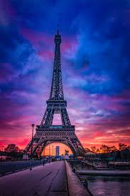

Paris, the capital of France, and is renowned for its rich history, stunning architecture, and vibrant cultural scene. As one of the world's most visited cities, it offers a perfect blend of old-world charm and modern sophistication. From the romantic Seine River to the bustling cafes, Paris captivates visitors with its timeless elegance and endless attractions.
Must-See Spots
Eiffel Tower - The iconic iron lattice tower offering panoramic views of the city.
Louvre Museum - Home to the Mona Lisa and countless masterpieces of art.
Notre-Dame Cathedral - A Gothic masterpiece with stunning stained glass windows.
Montmartre - The artistic hilltop district famous for the Sacré-Cœur Basilica.
Champs-Élysées - The famous avenue lined with shops, cafes, and the Arc de Triomphe.
Palace of Versailles - The opulent royal residence just outside the city.
Visitor Tips
Learn a few basic French phrases to enhance your experience and show respect.
Use the efficient Paris Métro system for quick and affordable transportation.
Be cautious of pickpockets in crowded areas like the subway and tourist sites.
Try authentic French cuisine at local bistros rather than tourist traps.
Visit during off-peak seasons for fewer crowds and better deals.

The Eiffel Tower, Paris's most famous landmark, illuminated at night against the city skyline.
"This blog's travelogue on Paris was incredibly detailed and inspiring. It made me excited to plan my own trip to the City of Light!"